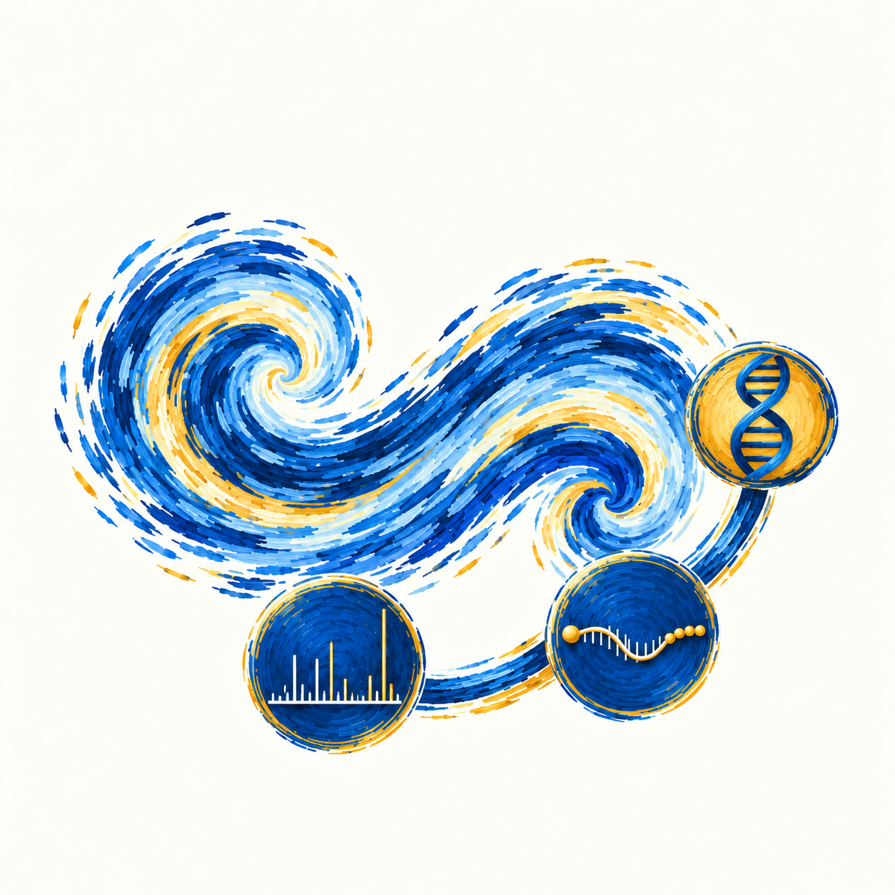

Kruttika Dabke, PhD
About
I’m Kruttika Dabke, a research scientist with a PhD in Biomedical Sciences from Cedars-Sinai Medical Center and a background in bioinformatics and oncology. I develop reproducible workflows and analyze molecular datasets to investigate disease biology.
My doctoral research focused on chemoresistance in high-grade serous ovarian cancer (HGSOC), combining proteomics with complementary omics and imaging analyses. I used statistical analysis including clustering, pathway enrichment, co-expression network analysis, and differential expression to characterize molecular patterns associated with chemoresistance and homologous recombination defeciency in HGSOC.
At the Ellison Medical Institute, I develop reproducible analysis workflows and scientific software for metabolomics studies, from data preprocessing and quality control to annotation and pathway analysis. I analyze experimental and clinical datasets to investigate metabolic responses to exposures, exercise, and drug treatment, using statistical methods to assess biological patterns and data reliability. I partner with experimental scientists on study design and interpretation, benchmark analytical tools, and communicate findings through documented reports, visualizations, and training.
Research interests
- Mass spectrometry
- Cancer biology
- Next-generation sequencing
- Reproducible bioinformatics pipelines
- Data visualization